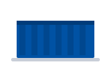
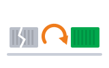
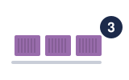
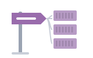
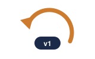

01The idea · គំនិតមូលដ្ឋានcontainer
A container packs an app with everything it needs.
កុងតឺន័រ វេចខ្ចប់កម្មវិធី ជាមួយអ្វីៗទាំងអស់ដែលវាត្រូវការ។
មូលដ្ឋាន Kubernetes · និយាយអំពី Kubernetes ជាភាសាអង់គ្លេស នៅកន្លែងធ្វើការ
Kubernetes ដូចជាអ្នកគ្រប់គ្រងកំពង់ផែ៖ វាដាក់កុងតឺន័រលើម៉ាស៊ីន រាប់ចំនួន ហើយជំនួសអាដែលខូច។

Containerកម្មវិធី + អ្វីៗដែលវាត្រូវការ
Self-healpod ខូច → pod ថ្មីតាមលំដាប់៖ គំនិត → cluster → deploy → ពង្រីក និងជួសជុល → និយាយនៅកន្លែងធ្វើការ។
Space listen · ← → move · K show text
A container packs an app with everything it needs.
កុងតឺន័រ វេចខ្ចប់កម្មវិធី ជាមួយអ្វីៗទាំងអស់ដែលវាត្រូវការ។
Kubernetes runs and manages many containers for us.
Kubernetes ដំណើរការ និងគ្រប់គ្រងកុងតឺន័រជាច្រើនជំនួសយើង។
A cluster is a group of machines called nodes.
Cluster គឺជាក្រុមម៉ាស៊ីន ដែលហៅថា node។
A pod is the smallest unit. It holds one or more containers.
Pod គឺជាឯកតាតូចបំផុត។ វាផ្ទុកកុងតឺន័រមួយ ឬច្រើន។
We describe what we want in a YAML file.
យើងសរសេរពីអ្វីដែលយើងចង់បាន នៅក្នុងឯកសារ YAML។

A deployment keeps the right number of pods running.
Deployment ធានាថា ចំនួន pod ត្រឹមត្រូវ កំពុងដំណើរការជានិច្ច។

A service gives the pods one stable address.
Service ផ្តល់អាសយដ្ឋានថេរមួយ ឲ្យ pod ទាំងនោះ។
When traffic goes up, Kubernetes adds more pods.
ពេលចរាចរណ៍កើនឡើង Kubernetes បន្ថែម pod ទៀត។
If a pod crashes, Kubernetes starts a new one.
បើ pod មួយគាំង Kubernetes ចាប់ផ្តើម pod ថ្មីមួយ។
Let me check the pod logs first.
ចាំខ្ញុំពិនិត្យ log របស់ pod សិន។

The new version broke, so I rolled it back.
កំណែថ្មីមានបញ្ហា ដូច្នេះខ្ញុំបាន rollback វាវិញ។
ពាក្យពីរដែលគេច្រឡំញឹកញាប់។
No. A pod can hold one or more containers. Most pods hold just one.
ទេ។ Pod អាចផ្ទុកកុងតឺន័រមួយ ឬច្រើន។ ភាគច្រើនផ្ទុកតែមួយ។
Pod ជាសំបក ហើយកុងតឺន័រនៅខាងក្នុង ដូចគ្រាប់សណ្តែកក្នុងសំបក។
It's a short name. There are eight letters between the K and the s.
វាជាឈ្មោះខ្លី។ មានអក្សរប្រាំបីរវាង K និង s។
អានថា "Kates" ឬ "K eights"។ ពាក្យពេញ Kubernetes អានថា koo-ber-NET-eez។
It runs and manages containers across many machines.
វាដំណើរការ និងគ្រប់គ្រងកុងតឺន័រ លើម៉ាស៊ីនជាច្រើន។
It scales our app and restarts it when something fails.
វាពង្រីកកម្មវិធីរបស់យើង ហើយចាប់ផ្តើមវាឡើងវិញ ពេលមានអ្វីខូច។
I update the image tag in the YAML file and apply it.
ខ្ញុំប្តូរ image tag ក្នុងឯកសារ YAML ហើយ apply វា។
A pod ran out of memory and crashed, but Kubernetes restarted it.확인 필요 · checkcheck
Pod មួយអស់ memory ហើយគាំង ប៉ុន្តែ Kubernetes បានចាប់ផ្តើមវាឡើងវិញ។
ប្រើពេលស្តាប់ពាក្យបច្ចេកទេសមិនយល់។
Tap a word's play button to hear it. Hide one side, then recall it before you tap to check.
A container packs an app with everything it needs. Kubernetes runs and manages many containers for us.
កុងតឺន័រ វេចខ្ចប់កម្មវិធី ជាមួយអ្វីៗទាំងអស់ដែលវាត្រូវការ។ Kubernetes ដំណើរការ និងគ្រប់គ្រងកុងតឺន័រជាច្រើនជំនួសយើង។
A cluster is a group of machines called nodes. A pod is the smallest unit. It holds one or more containers.
Cluster គឺជាក្រុមម៉ាស៊ីន ដែលហៅថា node។ Pod គឺជាឯកតាតូចបំផុត។ វាផ្ទុកកុងតឺន័រមួយ ឬច្រើន។
We describe what we want in a YAML file. A deployment keeps the right number of pods running. A service gives the pods one stable address.
យើងសរសេរពីអ្វីដែលយើងចង់បាន នៅក្នុងឯកសារ YAML។ Deployment ធានាថា ចំនួន pod ត្រឹមត្រូវ កំពុងដំណើរការជានិច្ច។ Service ផ្តល់អាសយដ្ឋានថេរមួយ ឲ្យ pod ទាំងនោះ។
When traffic goes up, Kubernetes adds more pods. If a pod crashes, Kubernetes starts a new one.
ពេលចរាចរណ៍កើនឡើង Kubernetes បន្ថែម pod ទៀត។ បើ pod មួយគាំង Kubernetes ចាប់ផ្តើម pod ថ្មីមួយ។
Let me check the pod logs first. The new version broke, so I rolled it back.
ចាំខ្ញុំពិនិត្យ log របស់ pod សិន។ កំណែថ្មីមានបញ្ហា ដូច្នេះខ្ញុំបាន rollback វាវិញ។
Q. Is a pod the same as a container?
Q. Pod និងកុងតឺន័រ ដូចគ្នាទេ?
A. No. A pod can hold one or more containers. Most pods hold just one.
A. ទេ។ Pod អាចផ្ទុកកុងតឺន័រមួយ ឬច្រើន។ ភាគច្រើនផ្ទុកតែមួយ។
Q. Why do people write K8s?
Q. ហេតុអ្វីគេសរសេរ K8s?
A. It's a short name. There are eight letters between the K and the s.
A. វាជាឈ្មោះខ្លី។ មានអក្សរប្រាំបីរវាង K និង s។
Q. What does Kubernetes do?
Q. Kubernetes ធ្វើអ្វី?
A. It runs and manages containers across many machines.
A. វាដំណើរការ និងគ្រប់គ្រងកុងតឺន័រ លើម៉ាស៊ីនជាច្រើន។
Q. Why do we use it?
Q. ហេតុអ្វីយើងប្រើវា?
A. It scales our app and restarts it when something fails.
A. វាពង្រីកកម្មវិធីរបស់យើង ហើយចាប់ផ្តើមវាឡើងវិញ ពេលមានអ្វីខូច។
Q. How do you deploy a new version?
Q. តើអ្នកដាក់កំណែថ្មីយ៉ាងដូចម្តេច?
A. I update the image tag in the YAML file and apply it.
A. ខ្ញុំប្តូរ image tag ក្នុងឯកសារ YAML ហើយ apply វា។
Q. What happened to the server last night?
Q. យប់មិញ server មានបញ្ហាអ្វី?
A. A pod ran out of memory and crashed, but Kubernetes restarted it.
A. Pod មួយអស់ memory ហើយគាំង ប៉ុន្តែ Kubernetes បានចាប់ផ្តើមវាឡើងវិញ។
Sorry, what does that term mean?
សុំទោស ពាក្យនោះមានន័យថាអ្វី?
Could you show me on the screen?
អាចបង្ហាញខ្ញុំលើអេក្រង់បានទេ?
Let me look into it and get back to you.
ចាំខ្ញុំពិនិត្យមើលសិន ហើយប្រាប់អ្នកវិញ។
Say it in your head first, then tap the box to check.